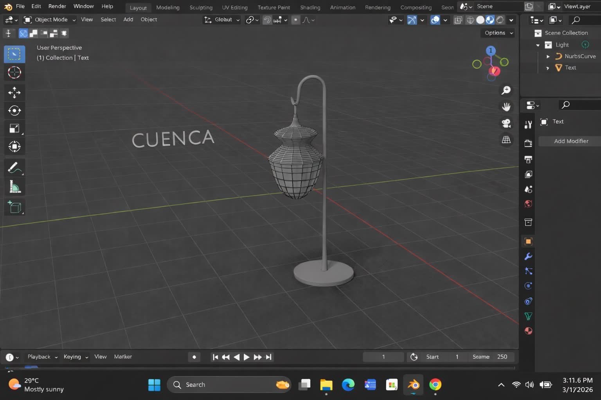
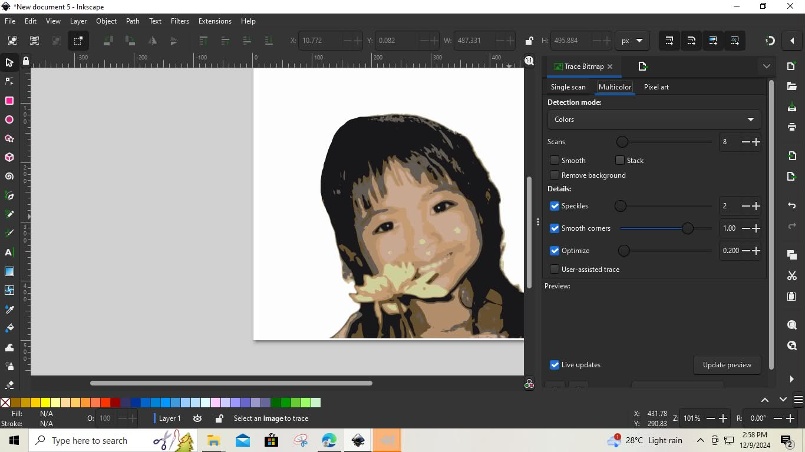
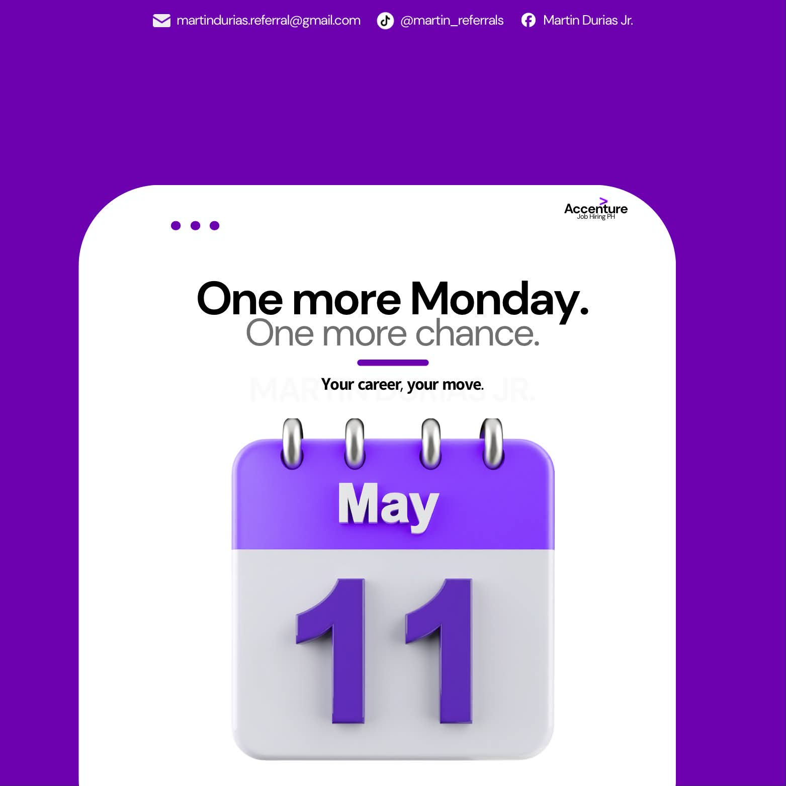
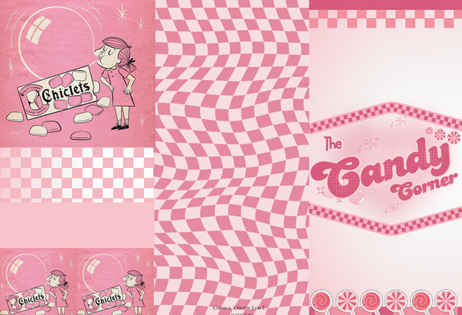
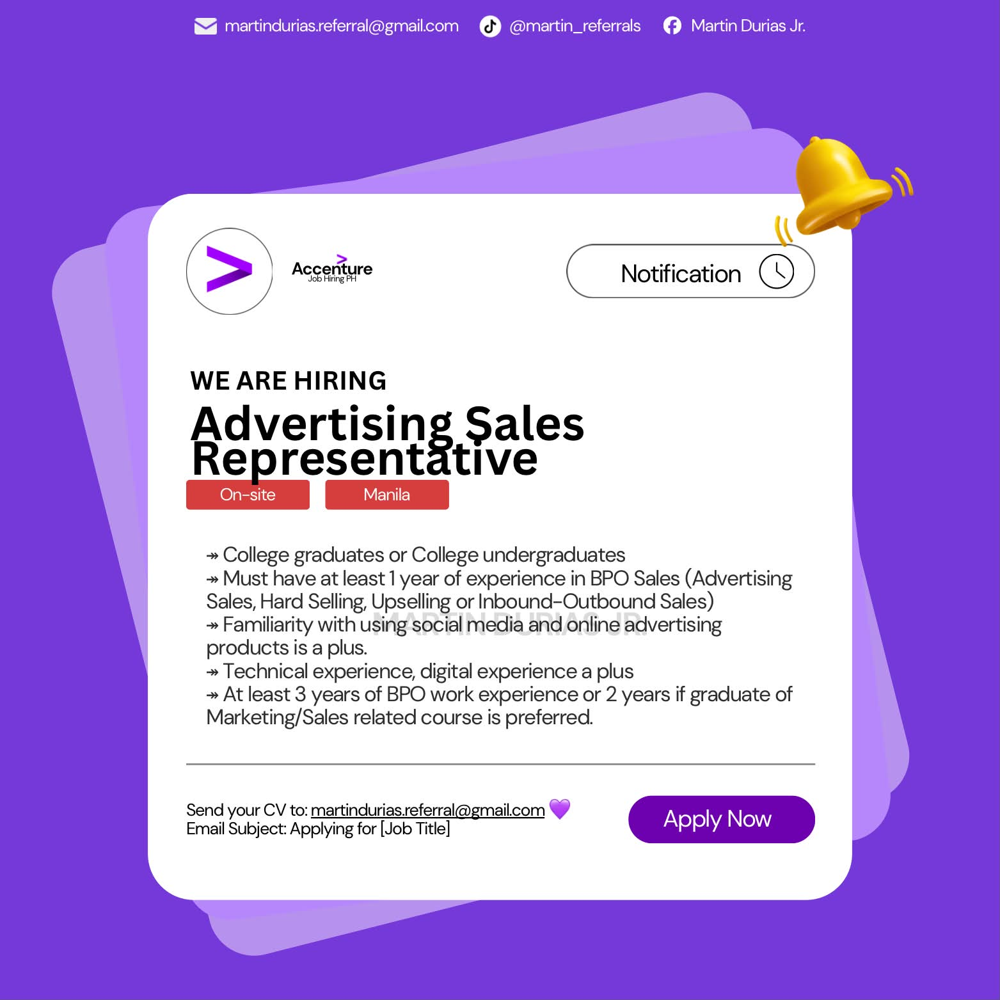

3D · Blender
Digital Craftsmanship
Leveraging Blender to visualize concepts in three dimensions — isometric environments, procedural lighting, and high-quality rendering.
Loading portfolio
Portfolio · 2026
I bridge the gap between complex logic and elegant design.
01 — About Me
Cherrie Lou Cuenca · BSIT Student, STI College Lipa
I am a 22-year-old Creative Developer and UI Enthusiast, currently navigating the intersection of technology and art. My work is defined by a commitment to bridging the gap between technical logic and human-centered design, ensuring digital products are both robust and beautiful.
Currently, I am pursuing my Bachelor of Science in Information Technology (BSIT) at STI College Lipa (2023–Present). Based in the Philippines, I am dedicated to mastering modern frameworks and design principles to create impactful digital solutions.
I architect clean, efficient systems in VS Code, ensuring that the backend is as robust as the frontend is beautiful.
Using Canva and Blender to craft high-fidelity interfaces and 3D assets that prioritize accessibility and user delight.
STI College Lipa — Pursuing a Bachelor of Science in Information Technology
Bulacnin Integrated National Highschool — Completed Secondary Education
Bulacnin Elementary School
02 — Projects
A curation of digital solutions where technical logic meets creative immersion. This module explores the transition from abstract concepts to functional reality through a multidisciplinary lens — spanning from high-fidelity UI prototypes to spatial 3D environments.
Leveraging Blender to visualize concepts in three dimensions — isometric environments, procedural lighting, and high-quality rendering.

Wireframe-to-render workflow exploring topology, surface detail, and clean mesh construction in Blender.

Utilizing GIMP and Inkscape to craft high-impact visual assets — precise color correction, complex masking, and creative compositing.

Bitmap-to-vector tracing for storytelling — exploring auto-trace settings, speckle reduction, and corner smoothing.

Architecting the brain of the digital product — backend logic with form validation, confirmation flows, and structured data capture.

Point-of-sale interface with order management and database persistence — CRUD operations with a friendly themed UI.

High-fidelity menu and brand identity — visual hierarchies, vibrant typography, and modern storytelling aesthetics.

Editorial-style social media composition combining 3D mockup elements with bold motivational copy.

Retro-inspired packaging concept with checkered patterns, character illustration, and confectionery-themed branding.

A clean, conversion-focused hiring announcement — clear visual hierarchy, scannable requirements, and a bold call-to-action layout.

Bold vertical typography paired with a clean qualifications list — a recruitment post built for quick scanning and a clear call to apply.

A ten-step hiring roadmap visualized as a connected path — numbered milestones guide referrals from application to Day 1.

Glassmorphism quote card on a deep violet gradient — an encouraging, minimal message that puts the copy front and center.

Light, airy layout with icon-led benefit rows and a strong accent check mark — a Monday-themed referral call-to-action.
03 — Skills
A multidisciplinary toolkit engineered for the modern digital landscape — bridging Technical Architecture with Creative Visualization. From architecting robust backend logic in Java and SQL to crafting immersive, spatial narratives in Blender, my skill set is defined by the pursuit of functional elegance and system integrity.
Adding dimension to digital storytelling through high-fidelity hard-surface modeling and atmospheric environment design.
Defining the visual soul of the product with pixel-perfect UI/UX prototyping and specialized graphic manipulation.
My foundation is built on modern web standards and logical architecture — clean, maintainable code that serves as the backbone for creative digital solutions.
Industry-leading design tools to bridge the gap between imagination and interface — visual hierarchy, accessibility, and pixel-perfect prototyping.
Pushing the boundaries of flat design by incorporating three-dimensional elements — depth, realism, and immersive storytelling.
The human side of digital craft — collaboration, communication, and the discipline to ship work that matters.
04 — Contact
Building the future together.
I am always looking for opportunities to blend Functional Logic with High-Fidelity Design. Reach out to discuss collaboration or innovative digital solutions.